Zabbix es una plataforma de monitoreo de código abierto para redes, servidores, máquinas virtuales,
aplicaciones y servicios. Recopila métricas mediante agentes y comprobaciones sin agente, almacena los datos
en una base de datos y permite visualizar estados y generar alertas desde una interfaz web.
Características principales de Zabbix:
Recopilación de métricas
Recopilacion de metricas: admite agentes, SNMP y otras comprobaciones, con intervalos y
claves configurables.
Alertas y eventos
Alertas y eventos: los disparadores detectan condiciones y las acciones pueden notificar al
equipo responsable.
Arquitectura distribuida
Arquitectura distribuida: servidor, base de datos, interfaz web, agentes y proxies
opcionales se ajustan a distintos despliegues.
Protocolos y tecnologías habituales:
Agente Zabbix y Zabbix agent 2 para recopilar datos
del sistema.
SNMP para consultar equipos de red y recibir traps
compatibles.
HTTP/HTTPS para comprobar sitios y servicios web.
IPMI, JMX, SSH y otros métodos según el tipo de
elemento y configuración.
Ventajas de usar Zabbix:
Monitoreo centralizado de disponibilidad y
rendimiento de distintos componentes.
Múltiples métodos de recopilación, incluidos agentes
y comprobaciones sin agente.
Plantillas, disparadores y acciones reutilizan
configuración y automatizan alertas.
Proxies opcionales permiten distribuir la
recopilación en redes remotas.
Interfaz web con mapas, gráficos, datos históricos y
reportes.
Desventajas de usar Zabbix:
Requiere dimensionar y mantener la base de datos y el
servidor de monitoreo.
La configuración de plantillas, elementos y
disparadores puede requerir experiencia.
Una política de retención o un sondeo mal ajustado
aumenta carga y almacenamiento.
Funcionamiento de Zabbix:
Zabbix recopila valores de hosts mediante agentes, servidor/proxy y comprobaciones compatibles. Los
datos se almacenan en una base de datos; elementos definen qué medir, disparadores describen condiciones
de problema y acciones generan notificaciones o tareas. La interfaz web permite configurar hosts,
revisar eventos y visualizar tendencias. Un proxy opcional puede recopilar datos en una ubicación remota
y enviarlos al servidor.
Casos de uso y valor operativo de Zabbix:
Monitoreo proactivo
Zabbix es muy útil para supervisar disponibilidad, uso de CPU, memoria, disco, red,
tráfico web, servicios críticos y estado de equipos de red. Ayuda a detectar anomalías
antes de que generen interrupciones para usuarios o clientes.
Alertas y toma de decisiones
Su verdadera fuerza reside en combinar métricas con alertas, mapas y reportes. Para
organizaciones con múltiples servidores o servicios críticos, permite coordinar
respuesta
operativa, mejorar tiempos de atención y llevar control del rendimiento a lo largo del
tiempo.
Información técnica útil
Aspecto
Detalle
Puertos principales
10050/TCP para agentes, 10051/TCP para servidor/proxy, y 80/443/TCP para la interfaz web
y la administración.
Requisitos comunes
Servidor con base de datos compatible, CPU y RAM suficientes según cantidad de hosts,
además de permisos de red para agentes y proxies.
Protocolos y métodos
Agente Zabbix, SNMP, ICMP, HTTP/HTTPS, SSH, IPMI, JMX y otros protocolos según los
elementos monitorizados.
Componentes clave
Servidor, base de datos, frontend web, agentes y proxies, todos trabajando junto a
plantillas y desencadenadores.
Consideraciones
Es importante planificar almacenamiento, retención histórica y alertas para evitar
saturación de la base de datos y ruido de notificaciones.
Atencion:Puedes descargar la ISO de Ubuntu Server 24.0.4
Aqui
Nota: Usa el usuario: Archivos, contraseña: Archivo_1234 y carpeta:
Archivos
Preparación de la máquina virtual
Crea una máquina virtual con un sistema operativo compatible con la versión elegida, siguiendo los
requisitos de Zabbix.
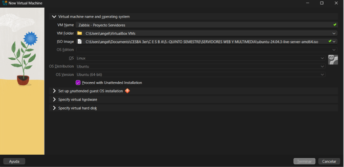
Se asigna CPU y memoria según la carga prevista; los valores dependen del entorno.
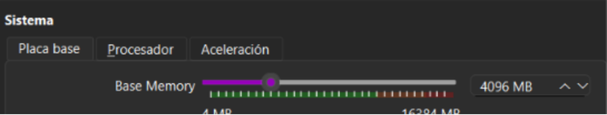
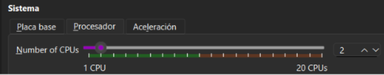
Se selecciona la opcion de try or install ubuntu server.
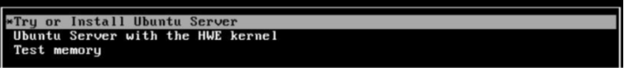
Revisa almacenamiento, adaptador de red y recursos antes de crear la máquina virtual.
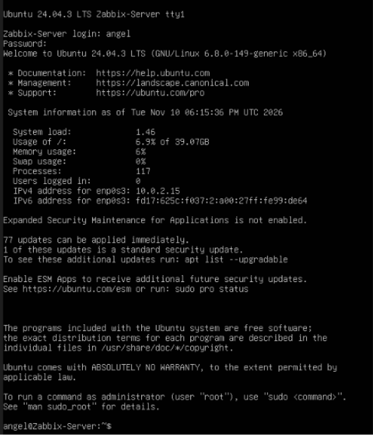
Ahora revisaremos el funcionamiento de la red por medio de algunos comandos.
ip -br addr, ip route, ping -c google.com
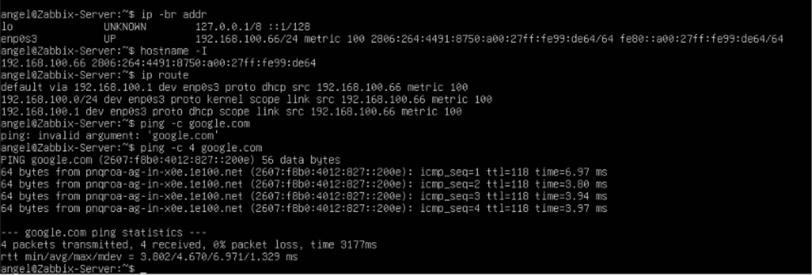
Ahora actualizaremos nuestro SO, con los siguientes comandos, una vez terminado selecciona el idioma
del teclado.
sudo apt update, sudo apt upgrade -y
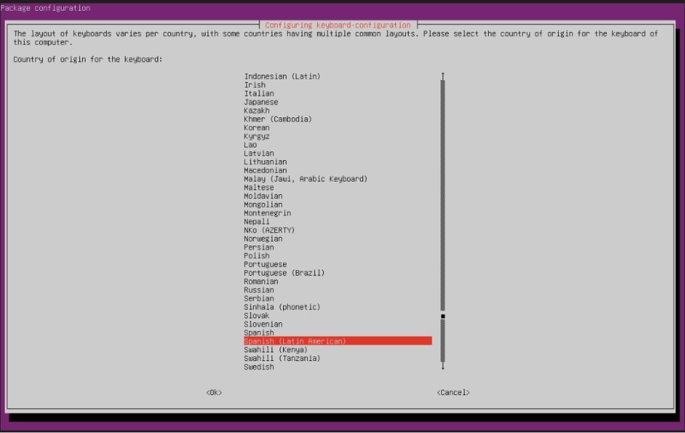
Ahora empezaremos con la instalacion de zabbix y su configuracion dentro de nuestro OS, este comando
contiene la configuración del repositorio oficial de Zabbix 7.4 para Ubuntu 24.04.
Una vez instalado el paquete, usaremos la base de datos para zabbix colocando lo siguiente
sudo mysql
CREATE DATABASE zabbix CHARACTER SET utf8mb4 COLLATE utf8mb4_bin;
CREATE USER 'zabbix'@'localhost' IDENTIFIED BY 'Zbx_2026_Angel!';
GRANT ALL PRIVILEGES ON zabbix.* TO 'zabbix'@'localhost';
SET GLOBAL log_bin_trust_function_creators = 1;
EXIT;
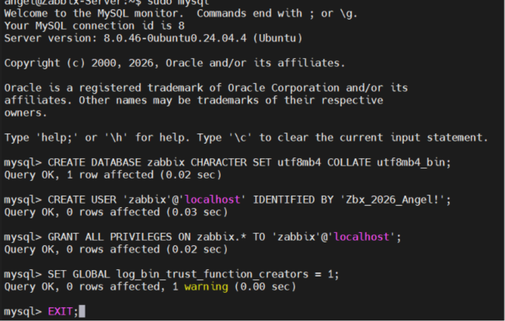
Ahora colocaremos la contraseña para la base de datos en zabbix
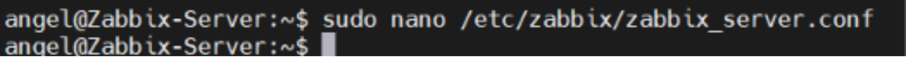
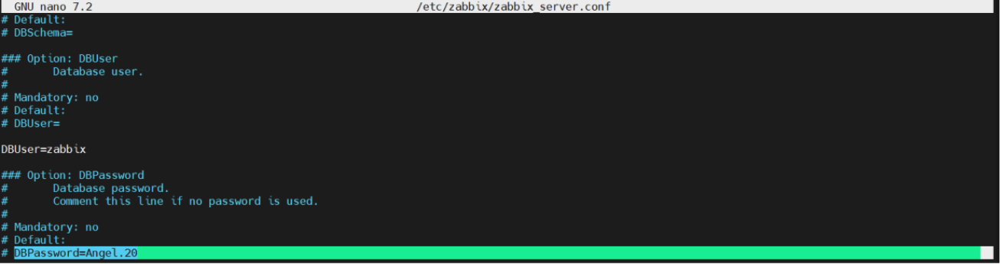
Ahora iniciaremos los servicios de mysql, zabbix-server, zabbix-agent, y apache2
sudo systemctl enable --now mysql
sudo systemctl enable --now zabbix-server
sudo systemctl enable --now zabbix-agent
sudo systemctl enable --now apache2
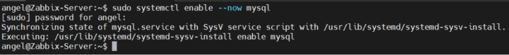
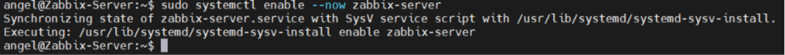
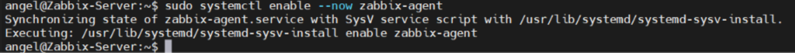
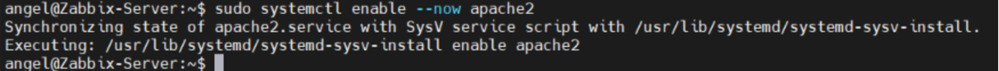
Ahora revisaremos que esten levantados los servicios de mysql, zabbix-server, zabbix-agent, y
apache2
sudo systemctl status --now mysql
sudo systemctl status --now zabbix-server
sudo systemctl status --now zabbix-agent
sudo systemctl status --now apache2
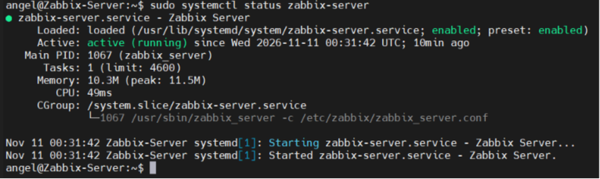
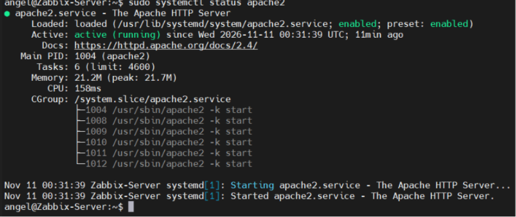
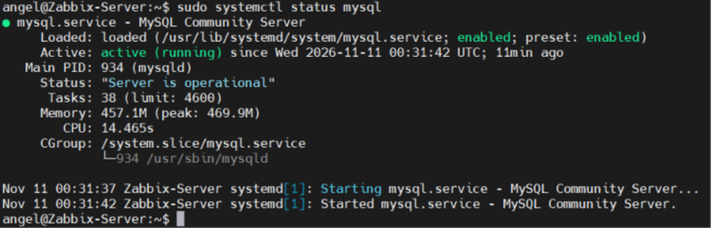
Ahora se instalaran los paquetes de idioma en español y reiniciaremos los servicioos para su
implementacion.
sudo apt install locales lenguage-pack-es -y
sudo locale-gen es ES.UTF-8
sudo apt update-locale
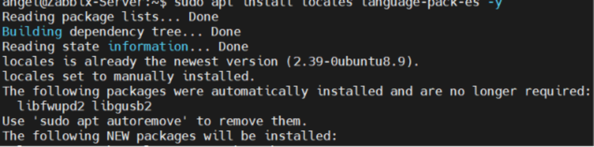
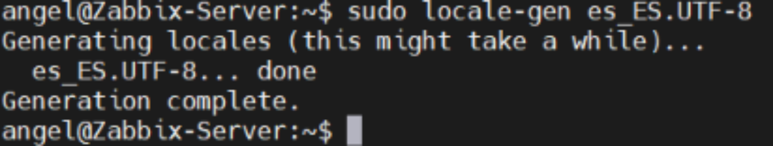
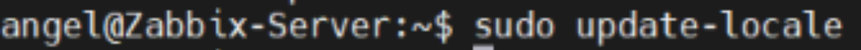
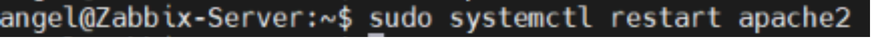
En el navegador colocar la IP de la maquina y ahora empezaremos a configurar, donde escogeremos el
idioma y daremos click en siguiente.
ip -c a
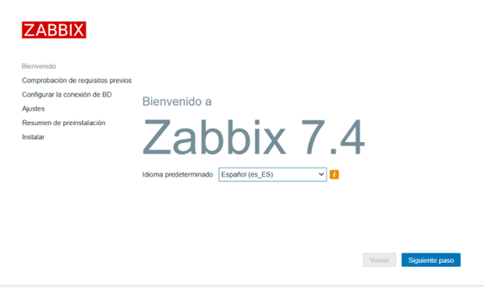
Aqui vamos a verificar que se encuentran todos los requisitos aprobados.
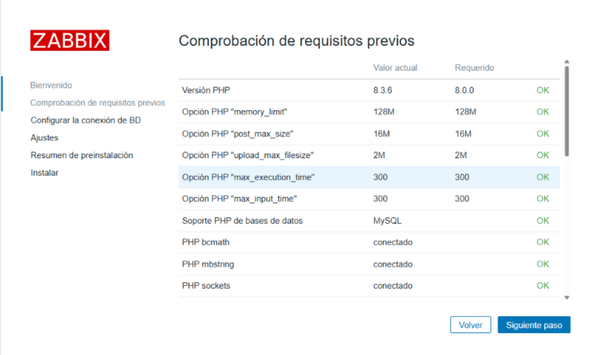
Ahora configuraremos la base de datos con las credenciales que ya hemos creado con anterioridad y
daremos click en siguiente.
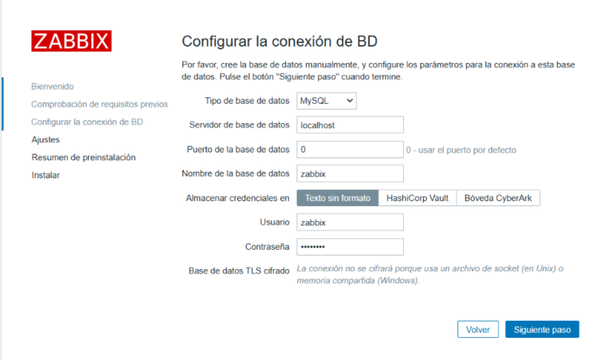
Aqui podremos seleccionar la zona horaria y daremos click en siguiente.
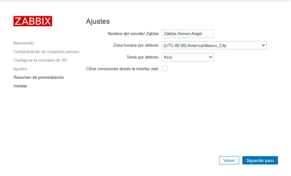
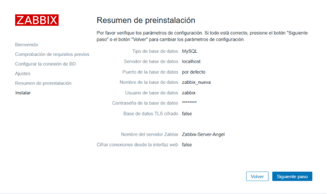
Verificamos que este todo correctamente configurado y daremos click en siguiente y por ultimo en
finalizar
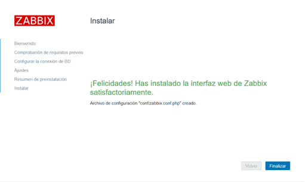
Ahora con zabbix instalado, podemos iniciar sesion con las credenciales.
Usuario: Admin
Passwd: zabbix
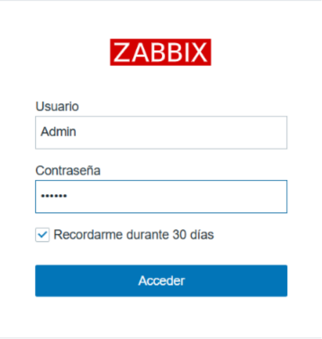
Ingresamos al apartado Informes y seleccionamos Información del sistema. Aquí podemos consultar el
estado general de nuestro servidor Zabbix, verificar que se encuentre en ejecución y revisar
información importante como la versión instalada, los equipos registrados, las plantillas, las
métricas y los usuarios conectados. Esto nos permite comprobar que la instalación funciona
correctamente.
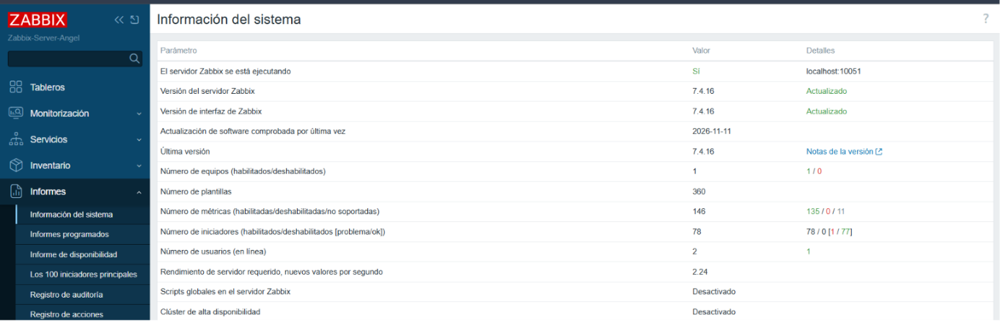
Ingresamos a Recopilación de datos → Equipos y seleccionamos el equipo Zabbix server. Revisamos que
tuviera asignadas las plantillas Linux by Zabbix agent y Zabbix server health, las cuales permiten
supervisar el rendimiento del sistema y el estado del servidor Zabbix.
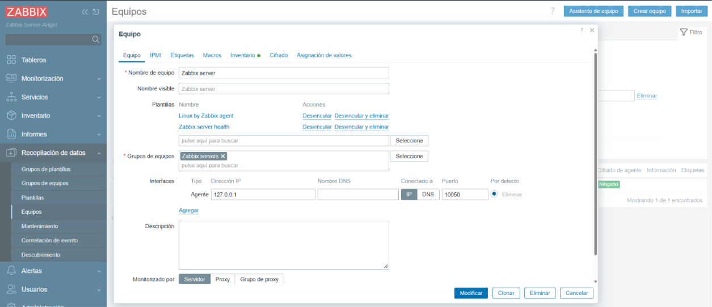
Comprobamos la disponibilidad del equipo desde Recopilación de datos → Equipos. El indicador ZBX
aparece en verde, lo que confirma que existe comunicación correcta entre el servidor Zabbix y el
agente instalado.
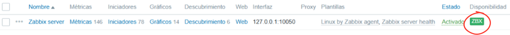
Ingresamos a Monitorización → Datos más recientes y seleccionamos el equipo Zabbix server. En esta
sección podemos observar la información que recopila el agente en tiempo real, como el uso del
procesador, memoria RAM, almacenamiento y tráfico de red. Esto nos permite comprobar que el
monitoreo está funcionando correctamente.
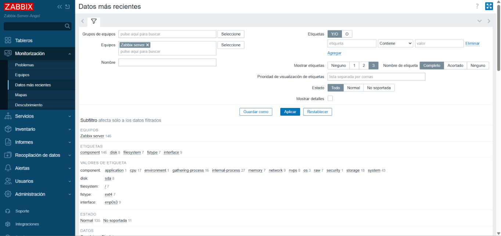
Ingresamos a Monitorización → Datos más recientes, buscamos la métrica CPU utilization y
seleccionamos la opción Gráficas. En esta sección podemos observar el porcentaje de uso del
procesador a lo largo del tiempo, lo que nos permite supervisar su rendimiento y detectar posibles
aumentos en su utilización.
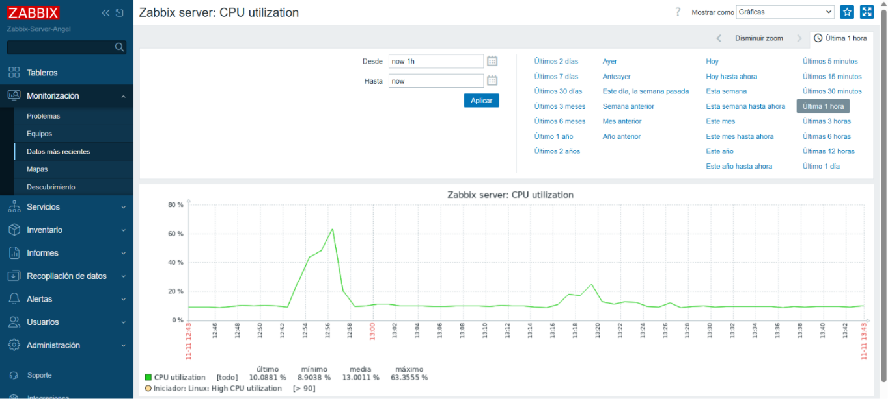
Ingresamos a Monitorización → Datos más recientes, buscamos la métrica Available memory y
seleccionamos Gráficas. Esta opción nos permite observar la cantidad de memoria RAM disponible en el
servidor y sus variaciones a lo largo del tiempo, facilitando la supervisión del consumo de
recursos.
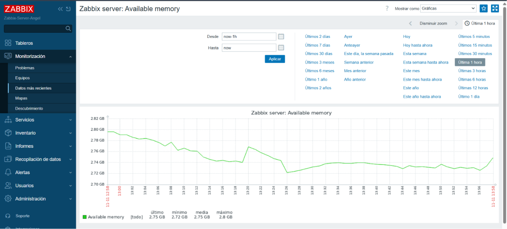
Ingresamos a Monitorización → Datos más recientes, buscamos la métrica FS [/]: Space: Used, in % y
seleccionamos Gráficas. Esta herramienta permite observar el porcentaje de almacenamiento utilizado
en el disco del servidor a lo largo del tiempo, facilitando el control del espacio disponible y
evitando que se llene.
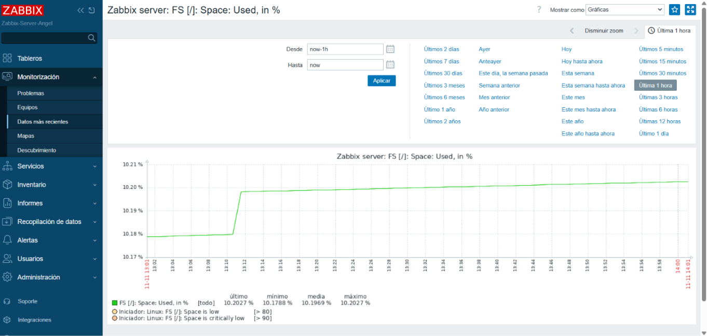
En este apartado podremos ver y monitorizar el trafico de red que hay de entrada.
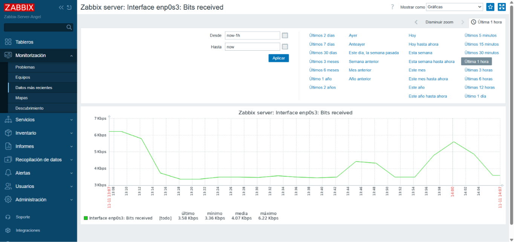
Aqui podemos monitorizar el trfico de red que hay de salida.
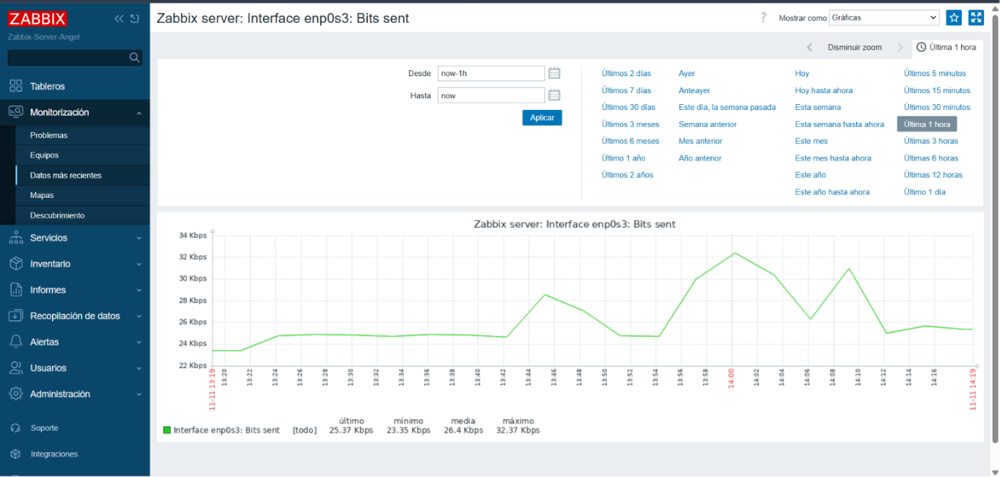
Ingresamos a Monitorización → Problemas y revisamos las alertas generadas por Zabbix. En esta
sección podemos identificar fallas o situaciones que requieren atención, conocer su gravedad y
consultar el equipo afectado. En nuestra revisión no se encontraron problemas durante la última
hora, lo que indica que no había alertas activas en ese periodo.
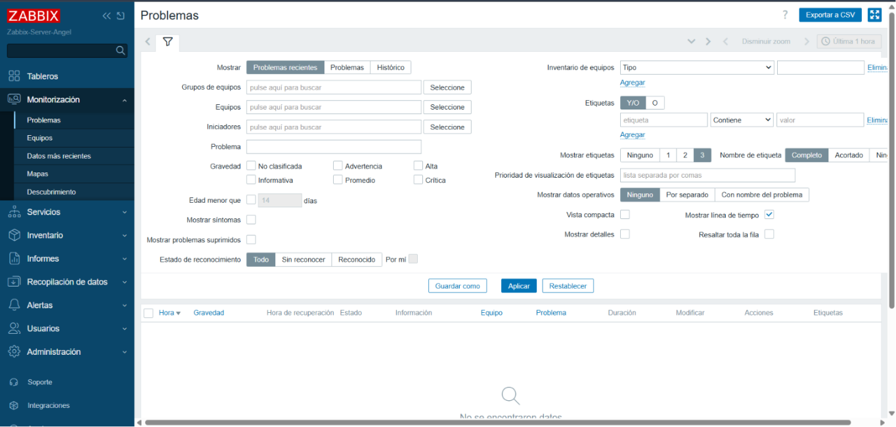
Conclusión sobre Zabbix:
Zabbix ofrece monitoreo centralizado y flexible para infraestructura y servicios, con recolección
distribuida, visualización y alertas. Para mantenerlo útil y estable, es importante dimensionar la base
de datos, elegir plantillas adecuadas y ajustar umbrales, intervalos y retención.